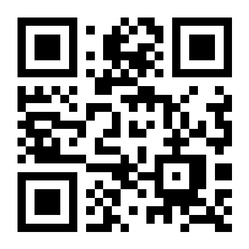
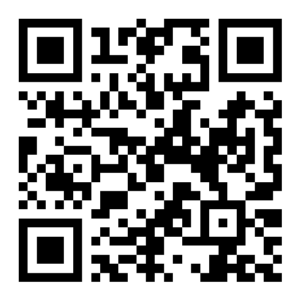
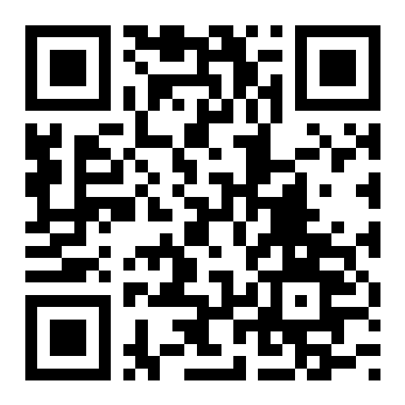
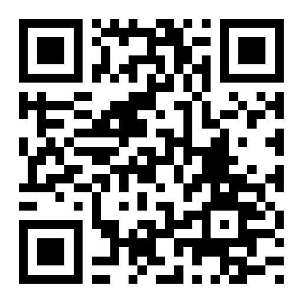
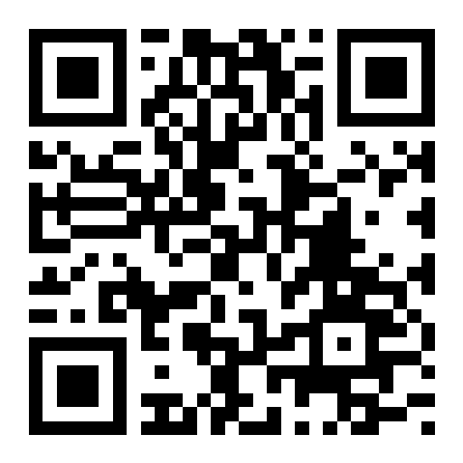
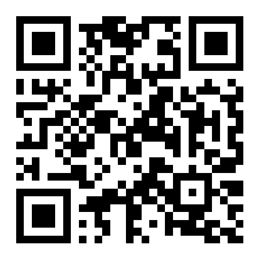
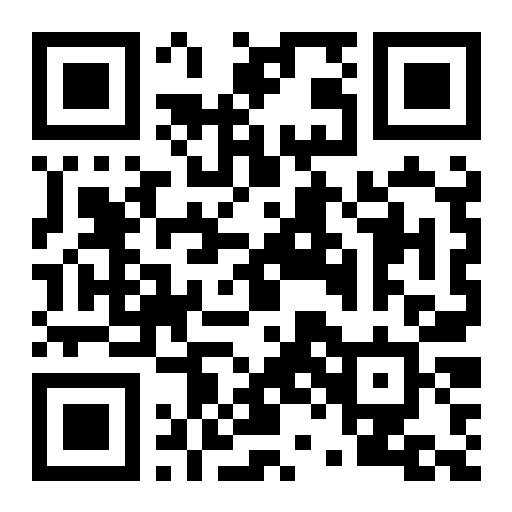
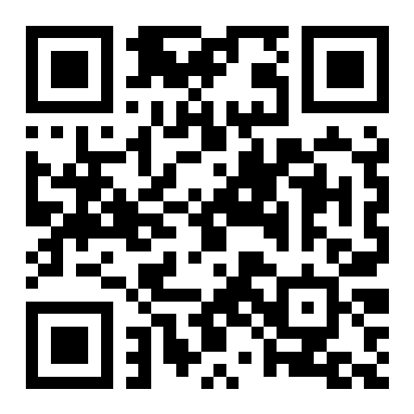

Abre cualquier panel desde tu celular en la misma red Wi-Fi. Servidor: 172.31.98.87
Elige abajo el tipo de enlace. Escanea el QR o toca Abrir.
nip.io? Cambia el DNS del Wi-Fi del teléfono a 8.8.8.8 y volverán a resolver.
https://172.31.98.87:8446/login → candado válido → la cámara del waiter funciona.

admin@smartmenu.com
chef@smartmenu.com
bartender@smartmenu.com
waiter@smartmenu.com
cashier@smartmenu.com
host@smartmenu.com
delivery@smartmenu.com